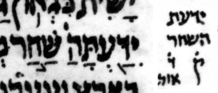

{kind=link}

| יִדַּ֖עְתָּה
הַשַּׁ֣חַר יִדַּ֖עְתָּ הַשַּׁ֣חַר |
38:12 | ה copied not moved in קרי in μL, says WLC but not BHQ |
The consensus is that this is one of those כתיב/קרי cases where the word boundary shifts from being after a ה to before that ה. I.e. ידעתה שחר becomes ידעת השחר. I.e. the ה that is at the end of the first word in the כתיב moves to the start of the second word in the קרי. Similar cases include 2 Samuel 5:2 (the כתיב is הייתה מוציא) and Ezekiel 42:9 (the כתיב is ומתחתה לשכות). In contrast to the consensus, in going from כתיב to קרי, μL can be thought of as having copied the ה to the second word rather than moving it.
Aside: the Jerusalem Crown edition, despite normally staying quite close to μA, found μA’s pointing of the כתיב to be too confusing for its body text, relegating it to an appendix. The question is where on the כתיב letters should we put the פתח that implicitly belongs to the ה of השחר. Both μA and μL put this פתח on the ה of ידעתה. In its body text, the Jerusalem Crown edition puts the פתח on no letter: instead, it floats before the ש of שחר. A vowel mark floating like this before a כתיב word has manuscript precedent. I.e. although the Jerusalem Crown edition is diverging from the manuscript here, it is not diverging from manuscript tradition in general by using this notation. For more on orphan pointing, see my document, “Orphan pointing.”
BHS does not catch this quirk in μL: it reflects the consensus rather than μL. BHQ half-fixes the error in BHS: it updates its marginal קרי note to reflect μL rather than the consensus, but it does not correspondingly update its bottom-of-page critical apparatus note. This is similar to what happened with 26:14.
U — M — μL (page 408A, col 1, line -11 (11 counting from bottom of column)):
μA (Aleppo) (page 280r, col 2, line 7, word 3):

μY (Cambridge 1753) (page 83B, col 2, line 12, word 1):

Jerusalem Crown: